Introduction
Everything on the SELECT and joins pages only ever looked at the database. However many times you run a SELECT query, the stored data comes out exactly as it went in.
The three statements on this page do the opposite. They manipulate the data — they change what the database actually holds:
INSERTadds a brand-new record to a table.UPDATEchanges values inside records that are already there.DELETEremoves whole records from a table.
Between them they cover almost everything an app does when you are not just browsing. Signing up creates a record. Editing your profile updates it. Closing your account deletes it.
There is one enormous difference from a SELECT query, and it is worth stating plainly before anything else: these statements cannot be undone. A SELECT that goes wrong gives you a list you did not want, and you shrug and try again. An UPDATE that goes wrong has already overwritten the old values, and they are gone. This is why so many exam marks on this topic are not for writing the statement at all, but for spotting that somebody else's statement would do the wrong thing.
Key Terms
The Database We Will Use
The examples on this page use the same school database as the SELECT and joins pages. The past-paper questions each bring a database of their own, shown with the question.
| pupilID | pupilName | dateOfBirth | yearGroup | house | meritPoints | clubID |
|---|---|---|---|---|---|---|
| P101 | Archie | 14/03/2010 | 4 | Churchill | 42 | C01 |
| P102 | Noah | 02/11/2009 | 5 | Curie | 18 | C03 |
| P103 | Mason | 27/06/2010 | 4 | Montgomerie | 55 | C01 |
| P104 | Christian | 09/01/2008 | 6 | Nightingale | 31 | C02 |
| P105 | Leoni | 18/09/2010 | 4 | Curie | 67 | C04 |
| P106 | Lucienne | 30/04/2009 | 5 | Churchill | 24 | C03 |
| P107 | Erika | 12/12/2011 | 3 | Montgomerie | 49 | C04 |
| P108 | Louie | 05/07/2009 | 5 | Nightingale | 12 | C01 |
| P109 | Matthew | 21/02/2011 | 3 | Curie | 38 | C02 |
| P110 | Riley | 08/05/2010 | 4 | Churchill | 71 | C04 |
| P111 | Harveer | 16/10/2008 | 6 | Nightingale | 26 | C03 |
| clubID | clubName | meetingDay | meetingTime | staffLead | equipmentProvided |
|---|---|---|---|---|---|
| C01 | Chess Club | Monday | 15:30 | Mr Anderson | TRUE |
| C02 | Debating | Tuesday | 13:05 | Ms Hendry | FALSE |
| C03 | Film Making | Thursday | 15:30 | Mrs Kaur | TRUE |
| C04 | Athletics | Wednesday | 16:00 | Miss Lawson | FALSE |
INSERT — Adding a Record
An INSERT adds one complete new record to a table. It does not change anything that is already there, and it does not need a WHERE clause — there is nothing to search for, because the record does not exist yet.
INSERT INTO tableName (field1, field2, field3)
VALUES ("text value", 42, "another text value");
The statement is really two lists that have to line up. The field list says which columns you are filling; the VALUES list says what goes in them. The first value goes in the first field, the second in the second, and so on.
Three things must match between those lists:
- The order — value 3 lands in field 3, whatever it happens to contain.
- The number — seven fields need seven values.
- The data type — a field holding a number should be given a number, not text.
Quoting follows the same rule as a WHERE clause: text and dates go in quotes, numbers do not.
Sofia has just started at the school. Her details are: pupil ID P112, date of birth 08/09/2011, year group 3, Curie house, 0 merit points, and she has signed up for Film Making.
Write the SQL to add her to the Pupil table.
How to tackle it: we work along the table's fields in order and pair each one with the value from the question. Doing it in the table's order — rather than the order the question happens to mention things — is what keeps the two lists lined up.
The fields are every column in Pupil: pupilID, pupilName, dateOfBirth, yearGroup, house, meritPoints, clubID. A new record needs all of them.
The values, in that same order: "P112", "Sofia", "08/09/2011", 3, "Curie", 0, "C03".
Two of those need thought. The question says "Film Making", but the Pupil table stores a code, not a name — so we look Film Making up in the Club table and write "C03". And "0 merit points" is genuinely zero, not blank: she has a merit point total, and it is nought.
INSERT INTO Pupil (pupilID, pupilName, dateOfBirth, yearGroup, house, meritPoints, clubID)
VALUES ("P112", "Sofia", "08/09/2011", 3, "Curie", 0, "C03");
Watch the trap: yearGroup and meritPoints are numbers, so 3 and 0 are written bare. Everything else is text — including "P112", which looks like an ID but contains a letter, and "08/09/2011", which is a date. Putting quotes round the numbers or leaving them off the text is the commonest way to lose the third mark.
1 mark for INSERT INTO Pupil with the field list · 1 mark for VALUES with all seven values in the matching order · 1 mark for correct quoting of text and dates, and none on the numbers.
INSERT INTO Pupil VALUES (…), relying on the table's own column order. Write the field list anyway. It makes the statement readable, it survives someone adding a column later, and in an exam it shows the marker you know which value belongs where.Is the INSERT Fit for Purpose?
An INSERT can be perfectly valid SQL — no error, no warning — and still put the wrong data in the table. When you are asked to evaluate one, these are the faults worth checking for:
- Values in the wrong order. The database does not know that an author is not a title. It fills the columns in the order given.
- The wrong number of values — six values for seven fields. This one usually does throw an error.
- The wrong data type — text pushed into a number field.
- A duplicate primary key. Adding a second
P101is rejected, because a primary key must be unique. - A foreign key that does not exist. This is referential integrity, and it is covered below.
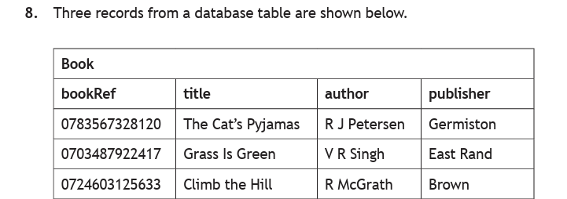
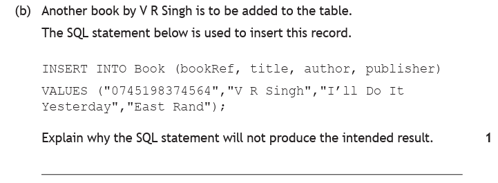
How to tackle it: the statement runs without complaint, so the fault is not a syntax error. We line the two lists up against each other and read them as pairs.
The field list is bookRef, title, author, publisher. The values are "0745198374564", "V R Singh", "I'll Do It Yesterday", "East Rand". Pairing them off:
| Field | Value it would receive | Correct? |
|---|---|---|
| bookRef | 0745198374564 | ✅ yes |
| title | V R Singh | ❌ that is the author |
| author | I'll Do It Yesterday | ❌ that is the title |
| publisher | East Rand | ✅ yes |
So the record would go in with a book called V R Singh, written by somebody called I'll Do It Yesterday. The title and author are the wrong way round.
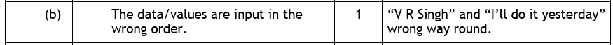
Corrected, the statement is:
INSERT INTO Book (bookRef, title, author, publisher)
VALUES ("0745198374564", "I'll Do It Yesterday", "V R Singh", "East Rand");
Watch the trap: the number of values is right, the data types are right and every value is a real piece of information about the book. Nothing about the statement looks wrong until you match the lists item by item. That matching is the entire skill being tested.
1 mark: the values are in the wrong order — the title and the author have been swapped.
Referential Integrity — a Recap
The last fault on the list is the one with a name. Referential integrity is the rule that a foreign key must point at a record that actually exists. The database enforces it, and it will refuse an INSERT that would break it.
Take the pupil we added above, but with one value changed:
INSERT INTO Pupil (pupilID, pupilName, dateOfBirth, yearGroup, house, meritPoints, clubID)
VALUES ("P112", "Sofia", "08/09/2011", 3, "Curie", 0, "C09");
Everything about that statement is well formed. Seven fields, seven values, correct order, correct types, correct quoting, and P112 is not already in use. It still fails — because C09 is not a club. The Club table holds C01 to C04, and nothing else.
The database rejects the whole record rather than store a pupil who belongs to a club that does not exist. If it allowed it, Sofia would become an orphan record: a row with a foreign key pointing at nothing, and a query joining Pupil to Club would simply lose her.
UPDATE — Changing a Record
An UPDATE changes values inside records that already exist. It never adds a record and never removes one — the same rows are there afterwards, with different data in them.
UPDATE tableName SET field = newValue WHERE condition;
The statement splits cleanly into two jobs, and it is worth naming them separately because exam faults nearly always live in one or the other:
SETdecides what changes — which field, and what it becomes.WHEREdecides which records change — exactly as it does in a SELECT query.
Several fields can be changed at once by separating them with commas:
UPDATE Club SET meetingDay = "Friday", meetingTime = "15:45" WHERE clubID = "C02";
UPDATE Pupil SET house = "Curie"; is valid SQL, runs without error, and puts all 11 pupils in Curie. The previous houses are gone. The WHERE clause is not an optional extra — it is the thing standing between you and the whole table.Riley has been awarded 5 more merit points for helping at parents' evening, taking her total from 71 to 76. Write the SQL to make this change.
How to tackle it: two decisions, in this order — what is changing, and who it is changing for.
What changes: the meritPoints field becomes 76. Not "add 5" — we state the new value.
Which record: Riley's, and only Riley's. The safe way to say that is her primary key, pupilID = "P110".
UPDATE Pupil SET meritPoints = 76 WHERE pupilID = "P110";
Watch the trap: WHERE pupilName = "Riley" would work on this data, because there happens to be only one Riley. But a second Riley enrolling next term would silently turn a correct statement into a wrong one. Name fields are not unique; primary keys are. Whenever you are changing one specific record, target its primary key.
1 mark for UPDATE Pupil SET meritPoints = 76 · 1 mark for WHERE pupilID = "P110".
Is the UPDATE Fit for Purpose?
UPDATE is the statement the exam most often asks you to criticise, and the faults fall into the two halves of the statement:
- The SET is wrong — the field is set to the wrong value, or to the value it already held, so nothing actually changes.
- The WHERE is too broad — it matches more records than intended, so records that should have been left alone are changed too.
- The WHERE is missing — every record in the table is changed.
The two past papers below are one of each, and both are worth studying because the SQL looks entirely reasonable at a glance.
This question uses the company database. appRef is the primary key of Employee.
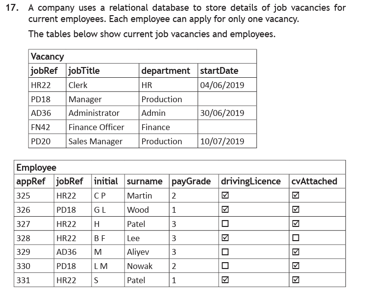
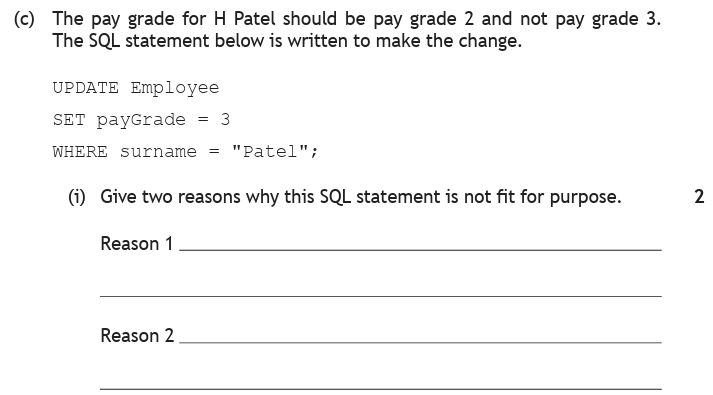
How to tackle part (i): take the statement in two halves and test each against what the question actually asked for. It asked for H Patel to be moved to grade 2.
Fault 1 — the SET is wrong. The statement says SET payGrade = 3. But 3 is the value H Patel already has; grade 2 is what was wanted. So either way of phrasing it earns the mark: the pay grade should be set to 2, or equivalently nothing would change, because the field is already 3.
Fault 2 — the WHERE is too broad. WHERE surname = "Patel" looks precise until you check the data. There are two Patels in the Employee table: appRef 327 is H Patel, and appRef 331 is S Patel. The statement would change both, and S Patel's pay grade has nothing to do with this request.
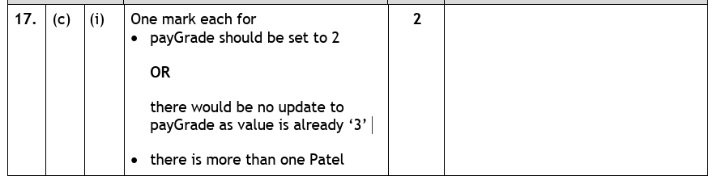
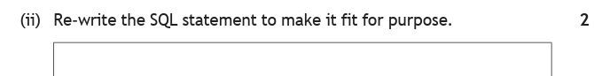
Part (ii) is then simply a matter of fixing each fault. Set the grade to 2, and identify the single employee by the field that is guaranteed unique — the primary key, appRef = 327:
UPDATE Employee SET payGrade = 2 WHERE appRef = 327;
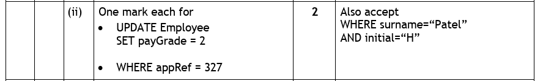
The marking instructions also accept WHERE surname = "Patel" AND initial = "H". That does narrow it to one employee here — but it only works because no two people share both an initial and a surname in this data. The primary key is unique by definition, which is why it is the better answer.
Part (i) — 1 mark: payGrade should be set to 2 (or: nothing would change, as it is already 3) · 1 mark: there is more than one Patel.
Part (ii) — 1 mark: UPDATE Employee SET payGrade = 2 · 1 mark: WHERE appRef = 327.
![Exam question 15. The Game table stores gameID, gameName, programmer, rating, testerID and multiplatform, containing 378B World Away CodeQueen 12A; 311H Denta Deet AbdurPSK 15; 484D Cupland LindyLoo 12A; 257P Heat Wave EMC2 15; 183B Water Rage CodeQueen 15; 021B Bee-Hive AcroGymGal 12A; 782C Combat45 AbdurPSK 12A. The game Water Rage has been reclassified as an 18 rating and the statement UPDATE Game SET rating = 18 WHERE programmer = CodeQueen was implemented. Part b: explain why the SQL statement would give an unexpected result, one mark. Part c: rewrite the SQL statement to give the expected result, one mark.](../resources/ddd/worked-examples/n5_update_q2.png)
How to tackle part (b): the intention is stated in one sentence — reclassify one game, Water Rage. So we ask how many records the WHERE clause actually catches.
WHERE programmer = "CodeQueen" matches every game CodeQueen wrote. Reading down the programmer column, that is two games: Water Rage (183B), which we wanted, and World Away (378B), which we did not. So the statement changes all of CodeQueen's games to an 18 rating — and World Away, a 12A, is quietly reclassified as an adult game.
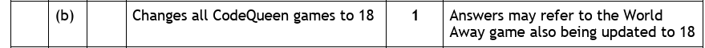
Part (c) needs a condition that picks out Water Rage and nothing else. gameName = "Water Rage" would do it on this data, but the field guaranteed to be unique is the primary key:
UPDATE Game SET rating = "18" WHERE gameID = "183B";
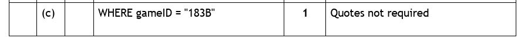
Only the WHERE line changes — the UPDATE and SET lines were correct all along. Notice that this is the mirror image of the Patel question: there the SET was wrong and the WHERE was too broad; here the SET is fine and the fault is entirely in the WHERE.
Watch the trap: both questions were solved the same way — by checking the WHERE condition against the actual rows and counting how many it matches. If the answer is more than one and the question described a single record, you have found the fault. Do that count every time.
Part (b) — 1 mark: it changes all CodeQueen's games to 18, not just Water Rage.
Part (c) — 1 mark: WHERE gameID = "183B". Quotes not required.
DELETE — Removing a Record
A DELETE removes entire records from a table.
DELETE FROM tableName WHERE condition;
It is the shortest of the three statements, because there is nothing to specify beyond which records to remove. And that is worth pausing on: there is no field list. You cannot delete part of a record — DELETE takes the whole row or nothing.
UPDATE Pupil SET clubID = NULL WHERE pupilID = "P108"; leaves Louie in the school but in no club. Being asked to "remove a pupil from a club" and reaching for DELETE would remove the pupil from the school.DELETE FROM Pupil; removes all 11 records. The table still exists, but there is nothing in it, and no SELECT will bring them back.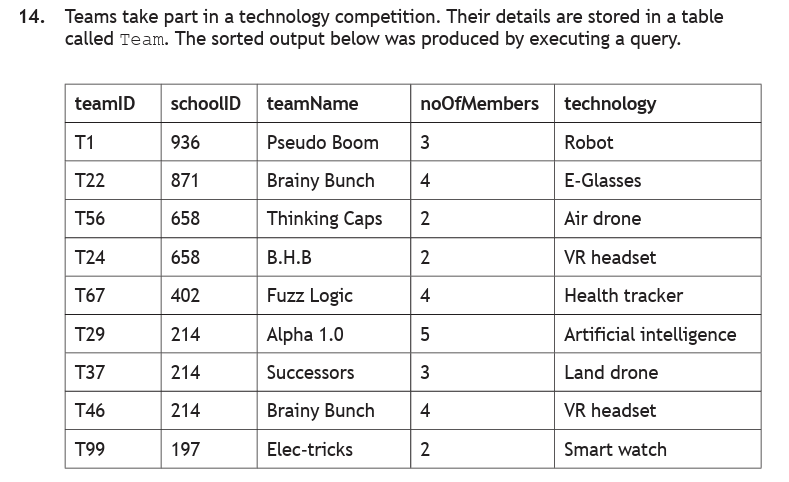
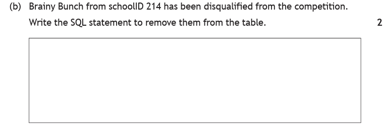
How to tackle it: the statement itself is short, so almost all the thinking goes into the WHERE clause. And the question has been written very deliberately.
Read the question again: "Brainy Bunch from schoolID 214". Those four extra words are not padding. Look down the teamName column — Brainy Bunch appears twice: T22 from schoolID 871, and T46 from schoolID 214. Writing WHERE teamName = "Brainy Bunch" would disqualify both, and only one of them did anything wrong.
So which record do we want? The one that is both Brainy Bunch and schoolID 214 — that is T46. Since teamID is the primary key, naming it identifies that record and no other:
DELETE FROM Team WHERE teamID = "T46";
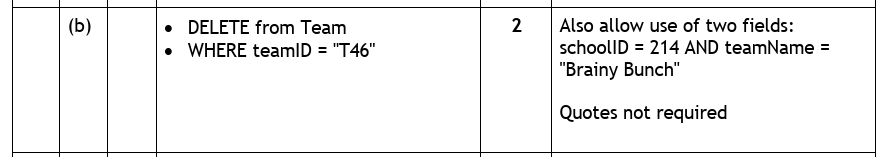
The marking instructions also accept the two-field version, which is what the question's wording points you towards:
DELETE FROM Team WHERE schoolID = 214 AND teamName = "Brainy Bunch";
Watch the trap: the danger here is answering the question you expected instead of the one asked. "Brainy Bunch has been disqualified" would be a one-condition answer; "Brainy Bunch from schoolID 214" is not. When a question adds a qualifier like that, it is telling you the obvious field is not unique — go and check the data before you write anything.
1 mark for DELETE FROM Team · 1 mark for WHERE teamID = "T46" (or schoolID = 214 AND teamName = "Brainy Bunch"). Quotes not required.
Is the DELETE Fit for Purpose?
DELETE has the same fault-lines as UPDATE — a WHERE that is too broad, or missing entirely — plus one of its own, because removing a record can break the link another table depends on.
The Film Making club is closing at the end of term. A technician writes:
DELETE FROM Club WHERE clubName = "Film Making";
Give two reasons why this statement will not achieve what was intended, and describe how to close the club correctly.
How to tackle it: we check the WHERE clause first, as always, and then ask the question that only applies to DELETE — is anything else pointing at this record?
Reason 1 — referential integrity will refuse it. Three pupils hold C03 as their foreign key: Noah, Lucienne and Harveer. Deleting the C03 record would leave all three pointing at a club that no longer exists, so the database rejects the deletion. The statement fails and the club is not closed.
Reason 2 — deleting the club does not deal with the pupils. Even setting integrity aside, removing a row from Club changes nothing in Pupil. Those three pupils would still be recorded as members of a club that no longer exists. The statement addresses only half the problem.
Doing it properly takes two statements, in this order — clear the references first, then remove the record:
UPDATE Pupil SET clubID = NULL WHERE clubID = "C03"; DELETE FROM Club WHERE clubID = "C03";
Once no pupil refers to C03, nothing is left pointing at it, and the delete is allowed.
Watch the trap: notice this is the insert rule in reverse. When adding, the record being pointed at must exist first. When deleting, everything pointing at it must be cleared first. Both are the same rule seen from opposite ends: a foreign key must never point at nothing.
1 mark: referential integrity prevents the deletion, because pupils still reference C03 · 1 mark: the pupils' records are not updated, so they would still refer to a club that does not exist · 1 mark: update the pupils first, then delete the club.
WHERE clause as a SELECT first — SELECT * FROM Team WHERE teamName = "Brainy Bunch"; would have returned two rows and shown the fault immediately. It is the only way to check what a statement will hit while you can still change your mind.Practice Questions
These use a city cycle hire database. Station holds the docking stations, Bike holds the bikes, and stationID is the primary key of Station and a foreign key in Bike.
| stationID | stationName | town | docks |
|---|---|---|---|
| ST1 | Riverside | Perth | 24 |
| ST2 | Harbour Point | Dundee | 16 |
| ST3 | Campus North | Dundee | 30 |
| ST4 | Old Bridge | Perth | 12 |
| bikeID | model | condition | lastService | stationID |
|---|---|---|---|---|
| B101 | Ridgeback Comet | Good | 04/03/2026 | ST1 |
| B102 | Apollo Trail | Fair | 18/01/2026 | ST2 |
| B103 | Ridgeback Comet | Good | 22/04/2026 | ST3 |
| B104 | Vantage Sprint | Poor | 09/11/2025 | ST1 |
| B105 | Ridgeback Comet | Fair | 15/02/2026 | ST2 |
| B106 | Apollo Trail | Good | 30/05/2026 | ST4 |
| B107 | Vantage Sprint | Good | 12/06/2026 | ST3 |
| B108 | Apollo Trail | Poor | 07/10/2025 | ST1 |
A new bike has arrived. Its details are: bike ID B109, model Ridgeback Comet, condition Good, last serviced 01/08/2026, and it has been placed at the Old Bridge station.
Write the SQL to add it to the Bike table.
Marking Instructions
INSERT INTO Bike (bikeID, model, condition, lastService, stationID)
VALUES ("B109", "Ridgeback Comet", "Good", "01/08/2026", "ST4");
1 mark: INSERT INTO Bike with the field list · 1 mark: VALUES with all five values in matching order · 1 mark: correct quoting.
The question names the station as "Old Bridge", but the Bike table stores a code. Look Old Bridge up in the Station table and write "ST4" — writing "Old Bridge" would break referential integrity, because no station has that stationID.
Every value here is text or a date, so all five are quoted. There is no number field in this table to catch you out — but check that before you assume it.
A member of staff writes the following to add another bike:
INSERT INTO Bike (bikeID, model, condition, lastService, stationID)
VALUES ("B110", "Fair", "Apollo Trail", "20/07/2026", "ST7");
Give two reasons why this statement will not produce the intended result.
Marking Instructions
1 mark: the values are in the wrong order — "Fair" and "Apollo Trail" have been swapped, so the model would be recorded as "Fair" and the condition as "Apollo Trail".
1 mark: ST7 is not a valid stationID. The Station table holds ST1 to ST4 only, so the foreign key points at a station that does not exist and referential integrity causes the whole record to be rejected.
Corrected:
INSERT INTO Bike (bikeID, model, condition, lastService, stationID)
VALUES ("B110", "Apollo Trail", "Fair", "20/07/2026", "ST2");
Note the two faults behave very differently. The swap produces no error at all — the record goes in, wrong. The invalid foreign key is caught and refused. The dangerous fault is the silent one.
Bike B104 has been repaired. Its condition is now Good and it was serviced on 10/08/2026. Write the SQL to record both changes.
Marking Instructions
UPDATE Bike SET condition = "Good", lastService = "10/08/2026" WHERE bikeID = "B104";
1 mark: UPDATE Bike with both fields correctly set, separated by a comma · 1 mark: WHERE bikeID = "B104".
Two separate UPDATE statements, one per field, are also correct — but the comma form does it in one pass and is what the question's wording invites.
The record was identified by its primary key. WHERE model = "Vantage Sprint" would have caught B107 as well, which is in perfectly good condition and was not repaired.
All bikes at the Campus North station are being moved to Riverside. A member of staff writes:
UPDATE Bike SET stationID = "ST1" WHERE model = "Ridgeback Comet";
(a) Explain why this statement would give an unexpected result. (b) Rewrite it correctly.
Marking Instructions
(a) 2 marks: the WHERE clause matches the wrong records. It selects on the model rather than the station, so it would move all three Ridgeback Comets — B101 (already at Riverside), B103 and B105 — while missing B107, a Vantage Sprint that really is at Campus North and should have been moved.
(b) 1 mark:
UPDATE Bike SET stationID = "ST1" WHERE stationID = "ST3";
This is the classic fault: searching on the field that happens to be visible in the question ("Ridgeback Comet" is a striking name) rather than the field the request is actually about. The request was about a station, so the condition must be about the station.
Correctly written, it moves B103 and B107 — the two bikes at Campus North — and touches nothing else.
The Apollo Trail bike at the Riverside station has been damaged beyond repair and must be removed from the database. Write the SQL statement to remove it.
Marking Instructions
DELETE FROM Bike WHERE bikeID = "B108";
1 mark: DELETE FROM Bike · 1 mark: WHERE bikeID = "B108", or WHERE model = "Apollo Trail" AND stationID = "ST1".
The question deliberately gives you two pieces of information, exactly as the Brainy Bunch question did — and for the same reason. There are three Apollo Trails (B102, B106, B108), so WHERE model = "Apollo Trail" alone would delete all three. Only B108 is at Riverside (ST1).
Whenever a question describes a record with two details rather than one, treat it as a warning that the first detail is not unique. Check the data before writing the condition.
The Riverside station is being closed permanently. A member of staff writes:
DELETE FROM Station WHERE stationID = "ST1";
(a) Explain why this statement will not succeed. (b) Describe what must be done first.
Marking Instructions
(a) 2 marks: referential integrity prevents it (1 mark), because three bikes — B101, B104 and B108 — still hold ST1 as their foreign key (1 mark). Deleting the station would leave those bikes pointing at a station that no longer exists.
(b) 1 mark: the three bikes must be reassigned to another station (or their stationID cleared) first, after which nothing refers to ST1 and the delete is allowed. For example:
UPDATE Bike SET stationID = "ST4" WHERE stationID = "ST1";
Note the statement itself is perfectly written — correct table, correct primary key, no fault in the SQL at all. It fails because of what else is in the database. That is what makes referential-integrity questions different from the WHERE-clause questions: you cannot spot the problem by reading the statement alone.
Next — Checking It Works
You can now read a database and change one. The remaining question is whether what you built actually does what was asked — which means testing and evaluation: choosing test data, checking a solution against the original requirements, and judging it on fitness for purpose, accuracy and efficiency.